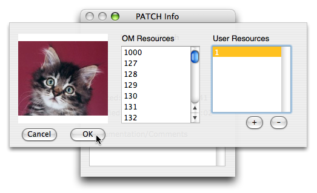
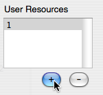

OpenMusic DocumentationHiérarchie de section : OM 6.6 User Manual > The OM Environment > Resources
OpenMusic DocumentationHiérarchie de section : OM 6.6 User Manual > The OM Environment > Resources
Navigation : page précédente | page suivante
Attention, votre navigateur ne supporte pas le javascript ou celui-ci à été désactivé. Certaines fonctionnalités de ce guide sont restreintes.
Resources
Resources are images or icons dedicated to the visual interface of OM. The user may have to choose images or icons for various reasons : inserting an image in a patch, giving an identity to a temporal object[1] in a maquette, choosing an icon for a patch, a class or a function...
Generalities
The user may be asked to select pictures or icons in several cases. In this case, a Resource Selection dialog will appear and help selecting the corresponding file from OM or user resources (see section below).

Format, Size and Name
Several formats can be handled by the OM interface :
- TIF files (.tif, .tiff),
- JPEG files (.jpg, .jpeg),
- GIF files (.gif),
- BMP files (.bmp)
- PNG files (.png).
Pictures and icons can have background transparency alpha layer.
Icons shouldn't exceed 64 pixels and be given a numeric reference such as "127.tiff".
Images can have any name and dimensions.
Uses
Pictures or icons can be assigned as background pictures in patches and maquettes. They can also be assigned to the patches and maquettes or other user-defined items in the Workspace and Library windows.
Changing the Icon of an Item
Background Pictures in Patches and Maquettes
Resources Directories
OM Resources

Pictures and icons of the OM Resources are located in the Applications / OM 6.X.X / resources / icon - pict sub folders.
User Resources

|
Pictures and icons added as User Resources belong to the workspace |
Resource Selection Dialog
Choosing resources
Depending on the case, the resource selection dialog will display the icons or pictures available in the OM resources and/or in the user resources.
Adding a Resource
You can add an icon or an image to the User Resources.
|

|
Select a resource :
Browse your hard drive to select a file.
Choose
OpenandOKin the dialogue window.Choose
Cancelto cancel your choice.

The selected file will be automatically copied and stored in the Workspace / Resources /sub-folder.
Deleting a Resource
To delete a picture or icon from the User Resources, choose -.
The corresponding file will be automatically deleted from the Workspace / Resources /sub-folder.
Références :
Temporal object
In a maquette, any object provided with an explicit or computable duration, such as an audio file, a chord object or a patch.
See also : Maquette.
Plan :
- OpenMusic Documentation
- OM 6.6 User Manual
- Introduction
- System Configuration and Installation
- Going Through an OM Session
- The OM Environment
- Environment Windows
- Preferences
- Workspace
- Library
- Tutorials
- Resources
- Visual Programming I
- Visual Programming II
- Basic Tools
- Score Objects
- Maquettes
- Sheet
- MIDI
- Audio
- SDIF
- Lisp Programming
- Errors and Problems
- OpenMusic QuickStart
Navigation : page précédente | page suivante
A propos...(c) Ircam - Centre Pompidou